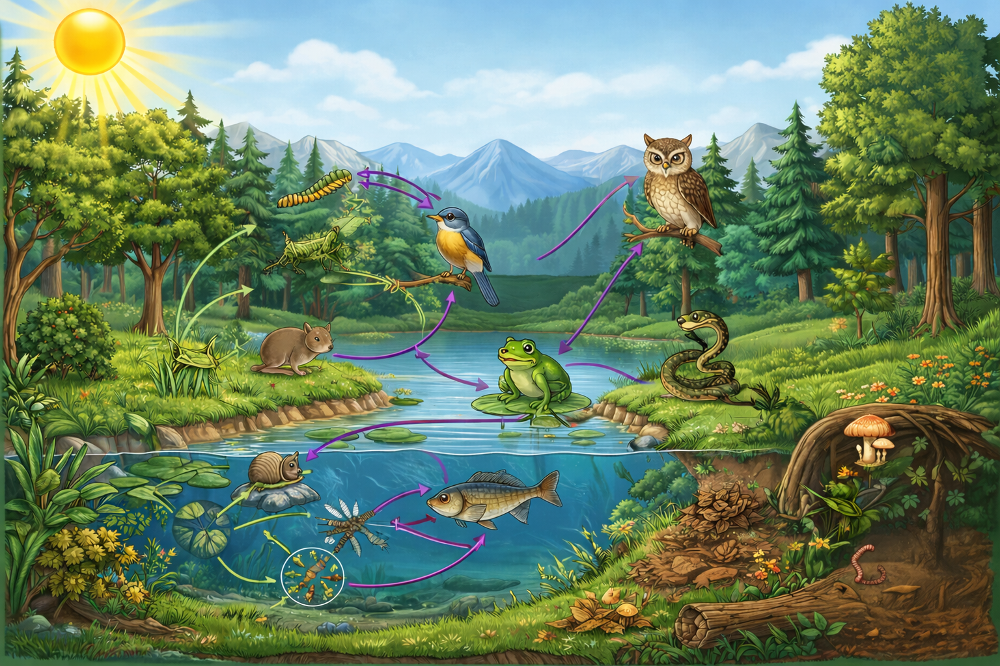

Interactive Poster
Food Web
Click the numbered points to learn how living things in this ecosystem are connected through feeding relationships.

My Progress
Your answers are saved automatically on this device.
My Score
This is a basic support marker. It checks for key ideas.
Food Web Concepts
A food web shows how many food chains are linked together in one ecosystem. It helps learners see that organisms usually have more than one feeding relationship.
Producer
A producer is a living thing, usually a green plant, that makes its own food using sunlight, water, and carbon dioxide.
Consumer
A consumer cannot make its own food. It gets energy by eating plants, animals, or both.
Predator and prey
A predator hunts and eats another organism. The organism that is hunted and eaten is called prey.
Decomposer
A decomposer breaks down dead plants and animals and returns nutrients to the soil and environment.
Comprehension Exercise
Study the food web and then type your answers below. After you submit each answer, you can open a modelled answer to compare your work.
1. What is the difference between a food chain and a food web?
Feedback
Model Answer
A food chain shows one simple feeding path from one organism to another. A food web shows many connected food chains in the same ecosystem. A food web is more realistic because most organisms eat more than one kind of food and may be eaten by more than one predator.
2. Why is grass called a producer in this ecosystem?
Feedback
Model Answer
Grass is called a producer because it makes its own food using sunlight, water, and carbon dioxide during photosynthesis. It does not need to eat other organisms to get energy, and it provides food for other organisms in the food web.
3. Name two organisms in this poster that are predators.
Feedback
Model Answer
Two predators in this poster are the owl and the snake. They hunt and eat other animals such as mice, birds, and frogs.
4. Why are fungi and earthworms important in an ecosystem?
Feedback
Model Answer
Fungi and earthworms are important because they help break down dead plants, animals, and waste material. This returns nutrients to the soil, which helps plants grow again. They are important decomposers in the ecosystem.
5. Explain how energy moves from plants to larger animals in a food web.
Feedback
Model Answer
Energy starts with plants because they make food by photosynthesis. Plant-eating animals such as grasshoppers, caterpillars, or snails get energy by eating plants. Larger animals such as frogs, birds, snakes, and owls then get energy by eating smaller animals. In this way, energy moves through the food web from producers to consumers.